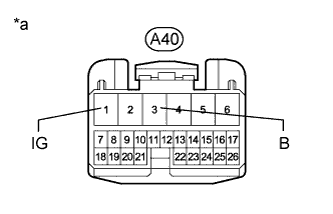

DTC C1782/82 Low Battery Positive Voltage |
| DTC Code | DTC Detection Condition | Trouble Area |
| C1782/82 | The voltage at terminal IG or B is 10 V or less or 16 V or higher for 0.5 seconds. |
|
| 1.READ VALUE USING INTELLIGENT TESTER (IG/+B POWER SOURCE VOLTAGE) |
Turn the engine switch off.
Connect the intelligent tester to the DLC3.
Turn the engine switch on (IG).
Turn the intelligent tester on.
Enter the following menus: Chassis / Air suspension / Data List.
| Tester Display | Measurement Item/Range | Normal Condition | Diagnostic Note |
| IG Power Source Voltage | Actual ECU power supply voltage / Min.: 0.0 V Max.: 25.5 V | Engine switch on (IG): 11 to 14 V | - |
| +B Power Source Voltage | Actual battery supply voltage / Min.: 0.0 V Max.: 25.5 V | Engine switch on (IG): 11 to 14 V | - |
| Result | Proceed to |
| NG | A |
| OK (When troubleshooting according to problem symptoms table) | B |
| OK (When troubleshooting according to DTC chart) | C |
|
| ||||
|
| ||||
| A | |
| 2.CHECK TERMINAL VOLTAGE (IG, B) |
Disconnect the A40 suspension control ECU connector.
|  |
Measure the voltage according to the value(s) in the table below.
| Tester Connection | Switch Condition | Specified Condition |
| A40-3 (B) - Body ground | Always | 11 to 14 V |
| A40-1 (IG) - Body ground | Engine switch on (IG) | 11 to 14 V |
| *a | Front view of wire harness connector (to Suspension Control ECU) |
|
| ||||
| OK | |
| 3.CHECK HARNESS AND CONNECTOR (SUSPENSION CONTROL ECU - BODY GROUND) |
Disconnect the A40 and R22 suspension control ECU connectors.
Measure the resistance according to the value(s) in the table below.
| Tester Connection | Condition | Specified Condition |
| R22-10 (GND) - Body ground | Always | Below 1 Ω |
| A40-5 (GND) - Body ground | Always | Below 1 Ω |
|
| ||||
| OK | |
| 4.CHECK FOR DTC |
Clear the DTCs (Click here).
Check for DTCs (Click here).
| Result | Proceed to |
| DTC is not output | A |
| DTC is output | B |
|
| ||||
| A | ||
| ||